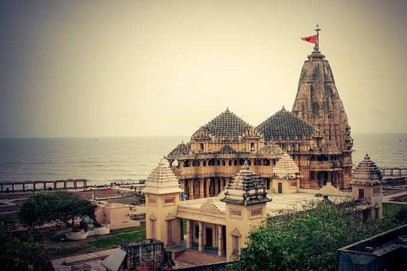

Somnath to Diu
Cycling from Somnath to Diu was an exhilarating adventure. Starting
at the iconic Somnath Temple, I pedaled along the scenic coastal
route. The cool breeze and stunning ocean views made the journey
enjoyable. Passing through quaint villages, I experienced the local
culture and tried delicious seafood. As I reached Diu's beaches, the
sense of accomplishment was overwhelming. It was a memorable cycling
trip filled with natural beauty and cultural exploration.
83.5 km
3 days tour
difficulty level:moderate
Mumbai to Daman
Cycling from Mumbai to Daman was an exhilarating journey. Starting
in the bustling city, I pedaled through Mumbai's chaotic streets
before hitting the coastal road. The scenic route along the Arabian
Sea offered breathtaking views of the coastline. As I reached Daman,
the serene beaches and Portuguese architecture were a delightful
reward for my efforts. The 180-kilometer ride was challenging but
incredibly memorable, making it a cycling adventure I'll
cherish forever.
170 kms
3 days tour
moderate
Kochi to the Backwaters
Cycling from Kochi to the Backwaters was an enchanting journey. The
coastal breeze and lush landscapes accompanied me as I pedaled
through picturesque villages. The serene backwaters welcomed me with
their tranquil beauty, making the entire ride a memorable and
serene adventure.
160 kms
5 days tour
moderate
East Coast Road from Chennai to Pondicherry
Cycling along the scenic East Coast Road from Chennai to Pondicherry
was exhilarating. The coastal breeze, lush landscapes, and
occasional glimpses of the Bay of Bengal made the 160-kilometer
journey a memorable adventure. As I pedaled through quaint villages
and enjoyed fresh seafood at local eateries, I marveled at the
beauty of the East Coast, arriving in Pondicherry with a profound
sense of accomplishment and a deeper connection to the coastline.
198 kms
2 days tour
moderate
Rameshwaram
Cycling in Rameshwaram was an unforgettable adventure. The serene
coastal roads, with the Pamban Bridge in the backdrop, provided
breathtaking views. Exploring the island's temples and pristine
beaches on two wheels was a unique and peaceful way to connect with
the natural beauty and spirituality of the region.
198 kms
2 days tour
moderate